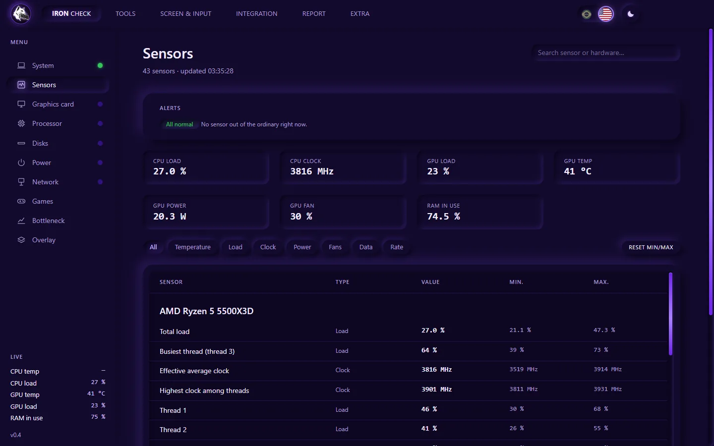
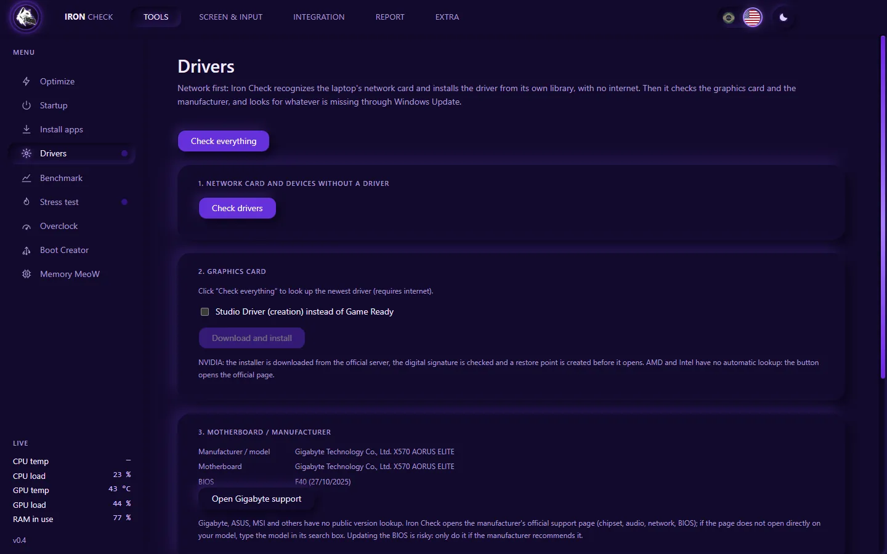
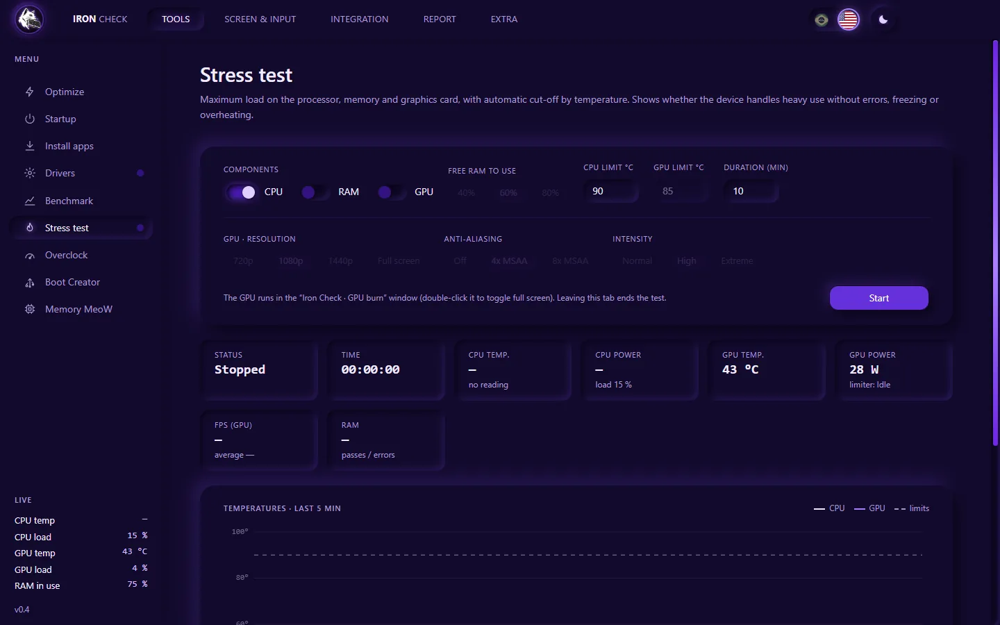
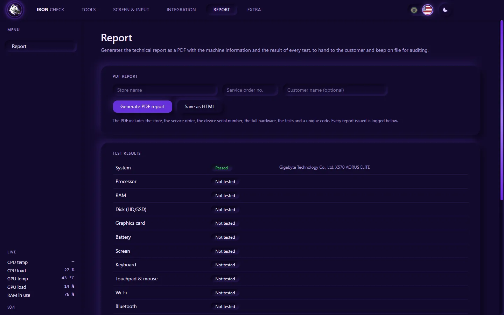
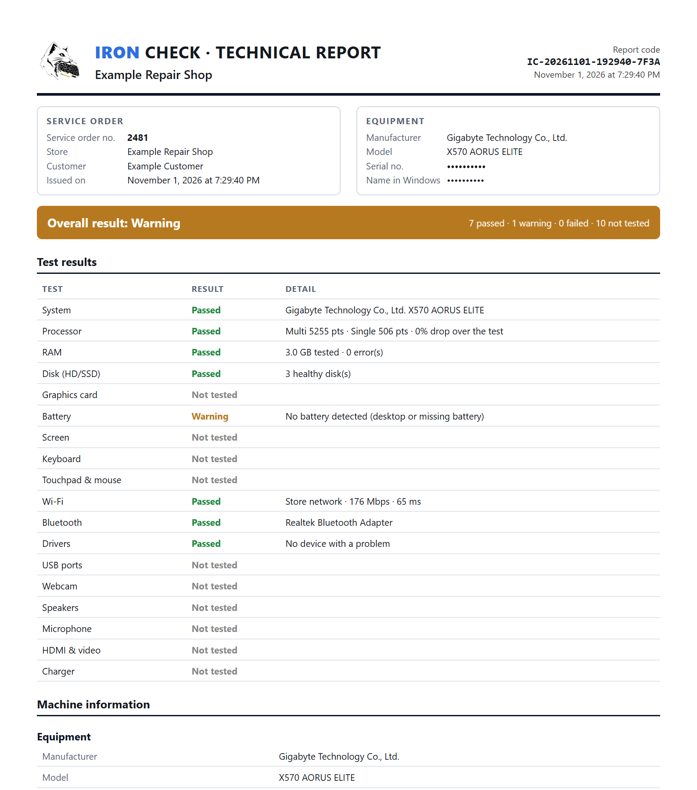

Five programs for one repair
One to read the hardware, another for the hard drive, another for memory, a website for the keyboard… each one works differently, and nothing gets recorded.
Iron Check tests the whole computer, installs the missing driver (the network card driver works even with no internet) and issues a PDF report with your customer's service order. In English and Portuguese, one click apart, in a program that runs from a USB stick.
Windows 10 or 11 (64-bit) · runs from a USB stick, no install · a trial key unlocks the full program for a few days
Click the menu on the screen: it is the real program menu, over photos of the real screens.
Iron Check fills the screen with color, one at a time. Stains, light bleed and dark pixels show up right away, before the device goes back to the customer.
Sample panel, made on this page. Scroll to zoom in and change the color.
If you run a repair shop, you have probably been through this:
One to read the hardware, another for the hard drive, another for memory, a website for the keyboard… each one works differently, and nothing gets recorded.
With no proof of what was tested and how the device left your bench, the conversation with the customer becomes your word against theirs.
Without the network card driver there is no internet to download the network card driver. And off you go, hunting for the right USB stick or your phone.
A hard drive with bad sectors, failing video memory, a worn-out battery, a loose USB port. What was not tested comes back as a return.
Iron Check was built to solve exactly this.
| Today | With Iron Check |
|---|---|
| Several test programs and websites, each with its own way of working. | One program, in English and Portuguese, that runs from a USB stick. |
| Eyeballed tests and notes on paper or in a chat. | Guided tests, with the result of each one recorded per device. |
| The customer complains and you cannot prove what you did. | PDF report with the shop, the service order, the hardware and the tests, with a unique code and a file authenticity check. |
| Reinstalled Windows and the network card has no driver. | The network driver is on the USB stick and installs without internet (more than 400 card models). |
| You find out the hard drive was failing after handing it back. | SMART, surface scan and performance before delivery, on HDD, SATA SSD and NVMe. |
| You hand it back without knowing if it holds up under heavy use. | Stress test of processor, memory and graphics card, with automatic cut-off by temperature. |
| Boot USB stick made in another program, formatted separately. | Boot Creator inside the same program. |
More than 30 tests and tools, in the order you work.
Know in seconds what is inside the device.

The check you run after replacing a part, without forgetting any.

Drivers, programs and system, without hunting for files on the internet.

Before handing it back, push the device and see if it holds.

This is where the customer sees the value of your service.


Sample report generated by the program. The device identifiers were hidden.
A professional document, with your shop's name, that shows what was tested and the state the device left your bench in.
You work on other people's computers. Iron Check was designed not to be the cause of a headache.
The surface scan only reads. The performance test uses a temporary file and deletes it at the end. No test writes to the raw disk.
Boot Creator only sees USB sticks and checks the target again before formatting. It never touches the system disk.
Overclock is temporary and uses only NVIDIA's official controls. The game tweaks keep the original value. The video driver gets a restore point first.
Drivers come from the manufacturers' official packages. The video driver is downloaded only from NVIDIA servers, with the digital signature checked.
If the license cannot be confirmed, the program simply locks until it is sorted out. The lock never deletes files, neither on your computer nor on the customer's.
Message us on WhatsApp. You get a trial key good for a few days of use, or the subscriber key after payment by Pix.
Download the full kit (program and drivers), extract it and copy the folder to the USB stick. Just want to try it? Download only the program.
Accept the Windows administrator prompt. The first launch prepares the files, the next ones are fast. The same key works on several computers.
Run the automatic tests, do the manual ones (display, keyboard, ports…) and generate the service order PDF to hand to the customer.
The key is checked over the internet. If the computer has no network yet, the activation screen itself offers the Drivers tab, and only that one.
Use Iron Check on real devices, on your own bench, and decide afterwards.
Windows 10 or 11, 64-bit. To unlock the program you need a key: ask for the trial one on WhatsApp.
353 MB .zip file. Extract it and take the whole folder to the USB stick.
Download the full kitIf you want, put the drivers folder next to it later.
Download the programAlready have the key? Open the file, accept the Windows administrator prompt and type the key. · All versions
The free ones are great, each at one thing, and you can keep using them. Iron Check brings what you use at the counter into one place and does what they do not: tests USB ports, webcam, microphone and speakers, installs the network driver without internet and issues a PDF report with the service order and a file authenticity check.
Message us on WhatsApp and ask for a trial key. It lasts a few days and unlocks the full program.
The subscription is monthly. You pay by Pix (Brazil's instant payment), send the receipt on WhatsApp and get your key. It works on several computers, designed for those who serve many customers. For the price, just ask on WhatsApp.
The program (Iron-Check-Portatil.exe, 92 MB) already opens by itself. The full kit also brings the drivers folder, with the network driver library the program uses to install without internet. Extract the kit and leave the drivers folder next to the .exe.
No. You open the file from any folder or from the USB stick. The first time it prepares its files in a folder next to it, which takes a few seconds; after that it opens fast (about 1 second in our test). The program's data (key and settings) stays in a folder next to the file, not on the customer's computer.
The tests do not. The disk scan only reads, the performance test uses a temporary file that is deleted at the end, and Boot Creator only touches USB sticks (and warns that it erases the stick). The few tools that change Windows, such as the game tweaks and driver removal, ask for confirmation and keep the original value or a copy.
It is the normal warning for new programs that do not yet have a reputation with SmartScreen. Click More info and then Run anyway. Some antivirus programs also scan the file on first launch, which can take a few extra seconds.
To read disk health and temperature and to install drivers, Windows requires administrator permission.
The program keeps working for up to 24 hours on the last confirmation. After that, without being able to check, it stays locked until the license is confirmed. Your files are never deleted.
It is for your repair shop's use. The server records the computers and the approximate location of each use, and use by many people is detected: the key can be blocked.
Yes, on both. Some tests (battery, touchpad, charger) only make sense on a laptop. The graphics card profile and the stress tests work on any PC.
Yes, and an English one. A switch with the Brazilian and US flags sits at the top of the screen: with one click, the menus, the messages and the PDF report change language, and the choice is saved. Useful for serving customers who do not read English, or who do not read Portuguese.
The tests work on any card. Card-specific features, such as overclock, detailed readout and driver installation, are for NVIDIA GeForce; AMD and Intel work for everything else.
No. The program needs Windows 10 or 11, 64-bit, on the computer where you open the file.
Direct support from the developer. Ask your questions, get the key and start today.